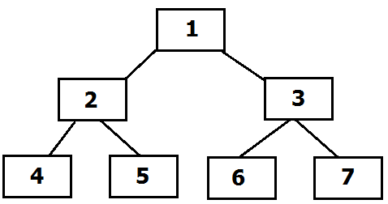
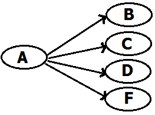

1. টেলিকমিউনিকেশন অর্থ কী?
কাছের যোগাযোগ
দূরবর্তী যোগাযোগ
কথোপকথন
যোগাযোগ
2. কম্পিউটার কিংবা অন্য কোনো যন্ত্রের সাহায্যে ডেটাকে এক স্থান থেকে অন্য স্থানে কিংবা এক
ডিভাইস থেকে অন্য ডিভাইসে স্থানান্তরের প্রক্রিয়াকে কী বলে?
কম্পিউটার নেটওয়ার্ক
ডেটা কমিউনিকেশন
কমিউনিকেশন
টপোলজি
3. ডেটা কমিউনিকেশন প্রক্রিয়া কয়টি ধাপে সম্পন্ন হয়ে থাকে?
২টি
৩টি
৪টি
৫টি
4. মোবাইল ফোন ডেটা কমিউনিকেশনের কোন পদ্ধতির অন্তর্ভূক্ত?
ক. Simplex Mode
খ. Half Duplex
গ. Full Duplex Mode
ঘ. Simple Mode
5. ক্লোর, কোডিং, বাফার আবরণ দিয়ে নিম্নের কোনটি তৈরী হয়?
অপটিক্যাল ফাইবার
টুইস্টেড পেয়ার
কো-এক্সিয়াল
হাব
6. যে প্রক্রিয়ার সুষ্ঠু ও সাবলীলভাবে যোগাযোগ সাধিত হয় তাকে কী বলে?
কম্পিউটার সিস্টেম
কমিউনিকেশন সিস্টেম
মোবাইল সিস্টেম
মেইলিং সিস্টেম
7. নিচের কোনটি কমিউনিকেশন মাধ্যম নয়?
মোবাইল ফোন
ই-মেইল
ইন্টারনেট
বিমান
8. কোনো ডকুমেন্ট মেইলের মাধ্যমে একস্থানে হতে অন্যস্থানে প্রেরণ কোন ধরনের কমিউনিকেশন সিস্টেম?
ক. Optical Communication System
খ. Radioi Communication System
গ. Duplex Communication System
ঘ. Digital Communication System
9. নিম্নের কোনটি রেডিও সিগন্যালের মাধ্যমে প্রেরণ করা হয়?
অপটিক্যাল কমিউনিকেশন সিস্টেম
রেডিও কমিউনিকেশন সিস্টেম
ডুপ্লেক্স কমিউনিকেশন সিস্টেম
সবগুলো
10. যে কমিউনিকেশনের সিস্টেমের মাধ্যমে প্রেরক ও প্রাপক একই সাথে তথ্য বিনিময় করতে পারে তাকে কী
বলে?
কৌশলগত কমিউনিকেশন সিস্টেম
হাফ ডুপ্লেক্স কমিউনিকেশন সিস্টেম
ডুপ্লেক্স কমিউনিকেশন সিস্টেম
রেডিও কমিউনিকেশন সিস্টেম
11. কমিউনিকেশন সিস্টেমের মৌলিক উপাদান কয়টি?
৩টি
৪টি
৫টি
৬টি
12. ট্রান্সমিশন সিস্টেম হলো?
মাধ্যম
প্রাপক
প্রেরক
গন্তব্য
13. নিম্নের কোনটি কম্পিউটারের ডিজিটাল সংকেতকে অ্যানালগ সংকেতে পরিণত করে টেলিফোন যোগাযোগ
ব্যবস্থার দ্বারা গ্রাহকের নিকট প্রেরণ করে?
মডুলেটর
ডিমডুলেটর
ডিকোডার
মডেম
14. নিম্নের কোনটি তথ্যের উৎস?
কম্পিউটার
টেলিফোন
স্যাটেলাইট
টেলিফোন লাইন
15. ডিজিটাল সংকেতকে অ্যানালগ সংকেতে রুপান্তরিত করার প্রক্রিয়াকে কী বলে?
রাউটিং
মডুলেশন
সুইচিং
নেটওয়ার্কিং
16. কম্পিউটারের পারস্পারিক যোগাযোগ কে কী বলে?
মডেম
নেটওয়ার্ক
ফ্যাক্স
হাইওয়ে
17. ডেটা ট্রান্সমিশন রেটকে কী বলে?
ব্যান্ড
উইডথ
ব্যান্ড উইডথ
ভয়েস ব্যান্ড
18. ডেটা ট্রান্সমিশন গতি কত প্রকার?
২টি
৩টি
৪টি
৫টি
19. নিচের কোনটি কমিউনিকেশন সিস্টেম বহির্ভূত?
যোগাযোগ নেটওয়ার্ক
তথ্য বিনিময় সিস্টেম
তথ্য বিনিময় কেন্দ্র
গাড়ি চালানো
20. ন্যারো ব্যান্ডের গতি-
ক. 9600bps
খ. 45bps
গ. 1 gbps
ঘ. 5 gbps
21. Bandwidth এর একক কোনটি?
ক. Hz
খ. Cycle/sec
গ. bit/s
ঘ. m/s
22. ডেটা ট্রান্সমিশন পদ্ধতিকে কয় ভাগে ভাগ করা হয়?
২টি
৩টি
৪টি
৫টি
23. ডেটা রিসিভার A এর জন্য ব্যবহৃত বাইনারি মান কোনটি?
ক. 10000001
খ. 1000001
গ. 01000010
ঘ. 11000001
24. নিম্নের কোনটির প্রেরক স্টেশনের সাথে একটি প্রাইমারী স্টোরেজের প্রয়োজন হয়?
সিনক্রোনাস ট্রান্সমিশন
আইসোক্রোনাস ট্রান্সমিশন
অ্যাসিনক্রোনাস ট্রান্সমিশন
আইসিক্রোনাস ট্রান্সমিশন
25. ডেটা প্রবাহের দিকে উপর ভিত্তি করে ডেটা ট্রান্সমিশন মোডকে কয় ভাগে ভাগ করা যায়?
২ ভাগে
৩ ভাগে
৪ ভাগে
৫ ভাগে
26. প্রেরক থেকে যে ডেটা গ্রাহকের ক্যারেক্টার বাই ক্যারেক্টার ট্রান্সমিট হয় তাকে কী বলে?
এসিনক্রোনাস
আইসোক্রোনাস
সিনক্রোনাস
বিসিনক্রোনাস
27. ডেটা কমিউনিকেশনের ক্ষেত্রে ডেটা প্রবাহের দিককে কী বলে?
ট্রান্সমিশন স্পীড
ডেটা কমিউনিকেশন
কম্পিউটার মোড
ডেটা ট্রান্সমিশন মোড
28. যে ডেটা ট্রান্সমিশন সিস্টেমে প্রেরক থেকে ডেটা গ্রাহকের ক্যারেক্টার বাই ক্যারেক্টার
ট্রান্সমিট হয় তাকে কী বলে?
সিনক্রোনাম ট্রান্সমিশন
এসিনক্রোনাম ট্রান্সমিশন
আইসোক্রানাস ট্রান্সমিশন
বিসিনক্রোনাস ট্রান্সমিশন
29. ডেটা শুধু এক দিকে প্রেরণ করা যায় কোন মোডে?
হাফ ডুপ্লেক্স
সিমপ্লেক্স
ডুপ্লেক্স
ফুল ডুপ্লেক্স মোড
30. সিমপ্লেক্স মোডের উদাদহরণ-
মোবাইল ফোন
টেলিফোন
ওয়াকিটকি
রেডিও
31.ইন্টারনেটে সবচেয়ে বেশি ব্যবহৃত হয় ডেটা ট্রান্সফারের কোন পদ্ধতিতে?
(ক) Synchronous
(খ) Isochronous
(গ) Asychronous
(ঘ) কোনাটিই নয়।
32. সিনক্রোনাস ডেটা ট্রান্সমিশনে প্রতি প্যাকেট কমপক্ষে কতটি ক্যারেক্টার থাকে?
৮০-১৩২ ক্যারেক্টার
৮০-১২০ ক্যারেক্টার
১২০-১৩২ ক্যারেক্টার
১০০-১১২ ক্যারেক্টার
33. নেটওয়ার্ক লাইন ইন্টারফেসের ওপর ভিত্তি করে ডেটা ট্রান্সমিশন পদ্ধতিকে কয়টি ভাগে ভাগ করা
যায়?
5 ভাগে
৪ ভাগে
৩ ভাগে
২ ভাগে
34. কেবল একদিকে ডেটা প্রেরনের মোডকে কী বলে?
ডুপ্লেক্স
হাফ ডুপ্লেক্স
ফুল ডুপ্লেক্স
সিমপ্লেক্স
35. টুইস্টেড পেয়ার ক্যাবলের ফ্রিকোয়েন্সি রেঞ্জ কত?
(ক) 0-5GHz
(খ) 5-10MHz
(গ) 0-5MHz
(ঘ) 0-5KHz
36. টুইস্টেড পেয়ার ক্যাবল তৈরী করা হয় কী ধরনের উপাদান দিয়ে?
(ক) Iron
(খ) Copper
(গ) Glass
(ঘ) Gold
37. STP ক্যাবলের সর্বোচ্চ ব্যান্ডউইথড কত?
(ক) 1Mbps
(খ) 10Mbps
(গ) 2Mbps
(ঘ) 20Mbps
38. UTP ক্যাবলের কতটি কপার তার থাকে?
২টি
৪টি
৮টি
১৬টি
39. ডেটা কমিউনিকেশনে কয় প্রকারের মাধ্যম রয়েছে?
২প্রকার
৩প্রকার
৪প্রকার
৫প্রকার
40. কোনটি স্বল্প দূরত্বের নেটওয়ার্ক স্থাপনে ব্যবহার করা হয়?
(ক) উপগ্রহ
(খ) রেডিওওয়েভ
(গ) ক্যাবল
(ঘ) স্যাটেলাইট
41. নিম্নের কোনটির মাধ্যমে একই সময়ে অনেকগুলো দেশের সাথে যোগাযোগ স্থাপন করা সম্ভব?
ক. শেয়ার টুইস্টেড পেয়ার ক্যাবল
খ টুইস্টেড পেয়ার ক্যাবল
গ. স্যাটেলাইট মাইক্রোওয়েভ
ঘ. টেবেস্টোরিয়েল মাইক্রোওয়ব।
42. STP- এর পূর্ণরুপ কী?
Share Twisted Pair
Shielded Twin Pair
Shielded Tower phone
Shielded Twisted Pair
43. নিম্নে কোনটিতে ডেটা ট্রান্সমিশন হার 100mbps থেকে 2gbps?
(ক) টুইস্টেড পেয়ার ক্যাবল
(খ) আনশিল্ডেড টুইস্টেড পেয়ার ক্যাবল
(গ) কো-এক্সিয়াল ক্যাবল
(ঘ) অপটিক্যাল ফাইবার ক্যাবল।
44. অপটিক্যাল ফাইবার জ্যাকেটের ব্যাস কোনটি?
(ক) 200µm
(খ) 300 µm
(গ) 400 µm
(ঘ) 100 µm
45. অপটিক্যাল ফাইবার ক্যাবল কমিউনিকেশন ব্যবস্থায় তিনটি অংশে দুটি হলো প্রেরক যন্ত্র ও গ্রাহক
যন্ত্র এবং অপরটি-
(ক) মডেম
(খ) মাধ্যম
(গ) তার
(ঘ) ডিটেক্টর
46. রেডিও তরঙ্গ সংগঠিত হয় কোথায়?
(ক) মোটামুটি দূরত্ব
(খ) কয়েক কিলোমিটার
(গ) খুবই অল্প দূরত্ব
(ঘ) ১ কিলোমিটার
47. কোন যন্ত্রটি নিম্ন শক্তিসম্পন্ন রেডিও সঞ্চালনে ডেটা পরিবর্তন করতে সক্ষম?
(ক) ব্লুটুথ
(খ) রেডিও
(গ) টেলিভিশন
(ঘ) কম্পিউটার
48. কোন প্রযুক্তি ব্যবহার করে শতাধিক ব্যবহারকারী একক বেস স্টেশন ব্যবহার করতে পারে?
(ক) Wi-Max
(খ) Wifi
(গ) Bluetooth
(ঘ) GPS
49. বেতার তরঙ্গের সীমা কত?
(ক) 20km-30km
(খ) 1km-50km
(গ) 1mm-10km
(ঘ) 50km-100km
50. ভূ-পৃষ্ঠে ট্রান্সমিটার বসানো থাকে কোন ওয়েভে?
(ক) স্যাটেলাইট মাইক্রোওয়েভ
(খ) রেডিও মাইক্রোওয়েভ
(গ) টিভি মাইক্রোওয়েভ
(ঘ) টেরিস্ট্রিয়াল মাইক্রোওয়েভ
51. কোনটি ব্লুটুথ ও ইনফ্রারেডের মাধ্যমে হ্যান্ডসেট বা ল্যাপটপের মধ্যে যোগাযোগের পদ্ধতি-
(ক) WWAN
(খ) WMAN
(গ) WPAN
(ঘ) WLAN
52. কয়েকটি wireless LAN মিলে নিম্নের কোনটি গঠিত হয়?
(ক) WWAN
(খ) WMAN
(গ) WPAN
(ঘ) WLAN
53. কোনটিতে Wi-Max প্রযুক্তি ব্যবহার করা হয়?
(ক) WWAN
(খ) WMAN
(গ) WPAN
(ঘ) WLAN
54. দূরে গ্রহ, গ্যালাক্সি এবং মহাশূন্যে বিভিন্ন বিপর্যয় পর্যবেক্ষন কাজ- এ নিম্নের কোনটির
ব্যবহার করা হয়?
(ক) রেডিও ওয়েভ
(খ) স্যাটেলাইট মাইক্রোওয়েভ
(গ) টেরিস্ট্রিয়াল মাইক্রোওয়েভ
(ঘ) ওয়্যারলেস
55. বর্তমানে মোবইল ফোনে ওয়্যারলেস প্রযুক্তিতে বহুল ব্যবহৃত প্রযুক্তি কোনটি?
(ক) ওয়াই-ফাই
(খ) তার মাধ্যমে
(গ) অপটিক্যাল ফাইবার
(ঘ) কো-এক্সিয়াল
56. LMR-এর পূর্ণরুপ কী?
(ক) Local Mobile Radio
(খ) Local Mobile Resister
(গ) Land Mobile Radio
(ঘ) Local Mbality Radio
57. SMR- এর পূর্ণরুপ কী?
(ক) Specialized Mobile Radio
(খ) Speed Mobile Radio
(গ) Special Mobile Radio
(ঘ) Social Mobile Radio
58. গাড়ির চালকের গতিবিধি বা কোথায় রয়েছে তা জানার উপায় কোনটি?
(ক) জিপিএস
(খ) মোবাইল
(গ) ফেসবুক
(ঘ) ব্লুটুথ
59. WAN- এর পূর্ণরুপ কী?
(ক) World Area Network
(খ) Wide Area Network
(গ) World After Network
(ঘ) World After Nature
60. ড. মার্টিন কুপার যে মোবাইলটি ১৯৭৩ সালে সর্ব প্রথম প্রদর্শন করেন তার ওজন কত ছিল?
২৫০ কেজি
৫.০০ গ্রাম
১ কেজি
১.৫ কেজি
61. ব্লুটুথের মাধ্যমে কোন নেটওয়ার্ক তৈরী হয়?
(ক) PAN
(খ) LAN
(গ) WAN
(ঘ) MAN
62. ব্লুটুথ উদ্ভাবন করেন কে?
(ক) টেলিকম
(খ) হার্ড এল্ড্রিসন
(গ) এরিকসন
(ঘ) আইবিএম
63. কত সালে ব্লুটুথ উদ্ভাবন করা হয়?
(ক) ১৯৮০ সালে
(খ) ১৯৯৪ সালে
(গ) ১৯৬২ সালে
(ঘ) ২০০৪ সালে
64. Bluetooth Special interest group এর সদস্য কত?
(ক) প্রায় ১৭০০০
(খ) প্রায় ১২০০০
(গ) প্রায় ২০০০০
(ঘ) প্রায় ২৫০০০
65. দুই বা ততোধিক যন্ত্রের মধ্যে তারবিহীন যোগাযোগের পদ্ধতিকে কী বলে?
(ক) মোবাইল ফোন
(খ) কম্পিউটার
(গ) ওয়্যারলেস কমিউনিশেন
(ঘ) স্মার্টফোন
66. নিম্নশক্তি সম্পন্ন রেডিও সঞ্চালনে ডেটা পরিবহন করতে সক্ষম যে যন্ত্র তার নাম-
(ক) ইনফ্রারেড
(খ) ব্লুটুথ
(গ) মোবাইল ফোন
(ঘ) রেডিও
67. ব্লুটুথ কত দূরত্ব পর্যন্ত সংযোগ স্থাপন করতে পারে?
(ক) 10cm-10m
(খ) 1km-10km
(গ) 10m-20m
(ঘ) 10cm-40m
68. ব্লুটুথের ফলে কোন নেটওয়ার্ক তৈরী হয়?
(ক) PAN
(খ) LAN
(গ) WAN
(ঘ) MAN
69. ব্লুটুথ উদ্ভাবন করেন কে?
(ক) টেলিকম
(খ) হার্ড এন্ড্রিসন
(গ) এরিকসন
(ঘ) টেলিকম এরিকসন
70. কত সালে ব্লুটুথ উদ্ভাবন করা হয়?
(ক) ১৯৮০
(খ) ১৯৯৪
(গ) ১৯৬২
(ঘ) ২০০৪
71. লোকাল এরিয়া নেটওয়ার্কের আওতায় পড়ে-
ক. অফিসভিত্তিক নেটওয়ার্ক
খ. রুমভিত্তিক নেটওয়ার্ক
গ. জেলাভিত্তিক নেটওয়ার্ক
ঘ. বিভাগীয় নেটওয়ার্ক
72. Wi-fi- এর স্ট্যান্ডার্ড হচ্ছে-
(ক) IEEE 80.211
(খ) IEE 802.11
(গ) IEEE 802.11
(ঘ) IEE 80.211
73. IEEE এর পূর্ণরুপ কী?
(ক) Institute of Electrical and Electronics Engineers
(খ) Institute of Electrical and Electronics Engineers
(গ) Impact of Electrical and Electronics Engineers
(ঘ) Institute of Electrical and Electronics Engineers
74. Wi-Max এর প্রধান অংশ কয়টি?
২টি
৩টি
৪টি
৫টি
75. ইনডোর ও আউটডোর টাওয়ার নিয়ে গঠিত কোনটি?
(ক) Wi-Max রিসিভার
(খ) Max বেস স্টেশন
(গ) Wi-Max বেস স্টেশন
(ঘ) Wi-Fi রিসিভার
76. Wi-Max নেটওয়ার্কে ১০ কিলোমিটারের মধ্যে গতি কত?
(ক) 1 mbps
(খ) 20 gbps
(গ) 10 mbps
(ঘ) 2 gbps
77. বাংলাদেশে কে প্রথম ওয়াইমাক্স সুবিধা প্রদান করেন?
(ক) Banglalion
(খ) Ollo
(গ) Qubee
(ঘ) Augure
78. ওয়াই-মাক্স এর ডেটা প্রবাহের হার কত?
(ক) ১০ মেগাবাইট/সেকেন্ড
(খ) ৩০-৪০ মেগাবাইট/সেকেন্ড
(গ) ৬০ মেগাবাইট/সেকেন্ড
(ঘ) ১ মেগাবাইট/সেকেন্ড
79. ২০১১ সালে স্থির স্টেশনগুলোতে তথ্য ট্রান্সমিশনের হার সেকেন্ডে কত করা হয়েছে?
(ক) ১ জিবি
(খ) ৫১২ এমবি
(গ) ২ জিবি
(ঘ) ২৫৬ এমবি
80. কোন প্রজন্মের মোবাইল সিস্টেমে NMT ব্যবহার শুরু হয়?
(ক) ১ম প্রজন্ম
(খ) ২য় প্রজন্ম
(গ) ৩য় প্রজন্ম
(ঘ) ৪র্থ প্রজন্ম
81. ব্যাংকের শাখা অফিসের মধ্যে কোন ধরনের নেটওয়ার্ক পদ্ধতি গড়ে উঠে সেই নেটওয়ার্কের নাম কী?
(ক) MAN
(খ) LAN
(গ) PAN
(ঘ) CAN
82. এক নেটওয়ার্ক থেকে অন্য নেটওয়ার্কে ডেটা পাঠানোর জন্যে কোন হার্ডওয়ার ব্যবহার করা হয়?
(ক) হাব
(খ) রাউটার
(গ) সুইচ
(ঘ) নিক
83. NTTC সেলুলার টেলিফোন উৎপাদন শুরু করে-
(ক) প্রথম প্রজন্মে
(খ) তৃতীয় প্রজন্মে
(গ) দ্বিতীয় প্রজন্মে
(ঘ) চতুর্থ প্রজন্মে
84. দ্বিতীয় প্রজন্ম হলো-
(ক) নেটওয়ার্ক
(খ) ইনফ্রারেড
(গ) তারবিহীন নেটওয়ার্ক
(ঘ) ব্লুটুথ
85. কম্পিউটার নেটওয়ার্কিং ব্যবস্থায় যুক্ত হয়-
(ক) দুটি কম্পিউটার
(খ) দুই বা ততোধিক কম্পিউটার
(গ) একটির সাথে অন্যটি
(ঘ) তিনটি কম্পিউটার
86. নেটওয়ার্ক হলো-
(ক) কম্পিউটারে তথ্য সংরক্ষন করা
(খ) ডাক যোগাযোগ
(গ) কম্পিউটারের আন্তঃসংযোগ
(ঘ) কম্পিউটারে তথ্য বিন্যাস
87. সর্বনিম্ন কয়টি কম্পিউটারের মধ্যে ক্যাবল যুক্ত করে নেটওয়ার্কিং করা যায়?
২টি
৩টি
৪টি
৫টি
88. নিচের কোনটি নেটওয়ার্ক শেয়ারিং এর জন্য ব্যবহৃত হয়?
(ক) হার্ডওয়ার ও সফটওয়ার
(খ) তথ্য বিনিময় ও সফটওয়ার
(গ) তথ্য বিনিময় ও হার্ডওয়ার
(ঘ) তথ্য বিনিময়, হার্ডওয়ার ও সফটওয়ার
89. নেটওয়ার্কের উদ্দেশ্য হলো ব্যবহারকারীর পরস্পরের মধ্যে কম্পিউটার--- কে ভাগাভাগি করে ব্যবহার
করা।
(ক) কম্পিউটার
(খ) রিসোর্স
(গ) মডেম
(ঘ) সার্ভার
90. PAN নেটওয়ার্ক তৈরী করা যায়-
(ক) বাড়ি, অফিস, গাড়ি
(খ) বাড়ী. অফিস, জেলা
(গ) বাড়ি, গাড়ি, শহর
(ঘ) অফিস, কলেজ, অন্যদেশ
91. LAN WAN সাধারণত গড়ে উঠে--- সীমানার মধ্যে।
(ক) ১০ কিঃমিঃ
(খ) ১ কিঃমিঃ
(গ) ১০০ মিঃ
(ঘ) ১০০ কিঃমিঃ
92. LAN ও MAN নিয়ে গঠিত হয়-
(ক) WAN
(খ) PAN
(গ) CAN
(ঘ) VAN
93. লোকাল এরিয়া নেটওয়ার্ক --
(ক) খুব কাছাকাছি নয় এরুপ কম্পিউটারের মধ্যে
(খ) খুব কাছাকাছি অবস্থিত কম্পিউটারের মধ্যে
(গ) কাছাকাছি দেশের মধ্যে কম্পিউটারের সংযোগ
(ঘ) পাশাপাশি দেশের কম্পিউটারের মধ্যে
94. NIC এর পূর্ণরুপ কী?
(ক) Network Net Card
(খ) Network Interface Card
(গ) Neutal Interface Card
(ঘ) New International Card
95. হাবের গতি অপেক্ষা সুইচের গতি-
(ক) কম
(খ) অনেক বেশি
(গ) বেশি
(ঘ) সমান
96. অধিক ক্ষমতাযুক্ত হাব কে কী বলে?
(ক) কম মেধাযুক্ত হাব
(খ) বুদ্ধিমান হাব
(গ) বোকা হাব
(ঘ) চালাক হাব
97. এক নেটওয়ার্ক থেকে অন্য নেটওয়ার্কে ডেটা পাঠানোর প্রক্রিয়াকে কী বলে?
(ক) রাউটার
(খ) ব্রাউটার
(গ) রাউটিং
(ঘ) হাব
98. রাউটিং এর জন্য যে হার্ডওয়ার ব্যবহার করা হয় তাকে কী বলে?
(ক) ব্রাউটার
(খ) রাউটার
(গ) গেটওয়ে
(ঘ) হাব
99. কোনো ব্যবহারকারী নেটওয়ার্কের কাজ সঠিকভাবে সম্পন্ন করতে নিচের কোনটি ব্যবহার করতে পারবে?
(ক) ফটোকপিয়ার
(খ) টেলিফোন
(গ) স্ক্যানার
(ঘ) মোবাইল
100. নেটওয়ার্ক ফাংশনের প্রধান কাজ কয়টি?
২টি
৩টি
৪টি
৫টি
101. কোন টপোলজি বৃত্তাকার?
(ক) হাইব্রিড টপোলজি
(খ) স্টার টপোলজি
(গ) রিং টপোলজি
(ঘ) ট্রি টপোলজি
102. একটি কেন্দ্রীয় নিয়ন্ত্রনকারী কম্পিউটারের সাথে একাধিক কম্পিউটারের সংযুক্ত হওয়ার টপোলজিকে
কী বলে?
(ক) বাস টপোলজি
(খ) রিং টপোলজি
(গ) স্টার টপোলজি
(ঘ) ট্রি টপোলজি
103. কোন টপোলজির নেটওয়ার্কভূক্ত কম্পিউটারগুলো পরস্পরের মধ্যে সরাসরি সংকেত আদান-প্রদান করতে
পারেনা?
(ক) স্টার টপোলজি
(খ) রিং টপোলজি
(গ) শংকর টপোলজি
(ঘ) শাখা-প্রশাখা টপোলজি
104. স্টার টপোলজির সম্প্রসারিত রুপ কী?
(ক) রিং টপোলজি
(খ) শাখা-প্রশাখা টপোলজি
(গ) বাস টপোলজি
(ঘ) ট্রি টপোলজি
105. কোন নেটওয়ার্কের জন্য কম্পিউটারের হোস্ট কম্পিউটার অপরিহার্য?
(ক) বাস টপোলজি
(খ) রিং টপোলজি
(গ) স্টার টপোলজি
(ঘ) পরস্পর সম্পর্কযুক্ত টপোলজি
106. হাইব্রিড টপোলজির উদাহরণ কোনটি?
(ক) মডেম
(খ) ইন্টারনেট
(গ) সার্ভার
(ঘ) মোবাইল ফোন
107. ডেটা কমিউনিকেশনের মাধ্যমে হিসেবে ব্যবহৃত হয়-
(i) ফাইবার অপটিক্স
(ii) ক্যাবল
(iii) মডেম
নিচের কোনটি সঠিক?
ক. i ও ii
খ. i ও iii
গ. ii ও iii
ঘ. i, ii ও iii
108. ডেটা কমিউনিকেশনের উৎস হলো-
(i) কম্পিউটার
(ii) টেলিফোন
(iii) ক্যাবল
নিচের কোনটি সঠিক?
ক. i ও ii
খ. i ও iii
গ. ii ও iii
ঘ. i, ii ও iii
109. কমিউনিকেশন সিস্টেম ব্যবহৃত হয়-
(i) ই-বিজনেস
(ii) তথ্য বিনিময়
(iii) শিক্ষার ক্ষেত্রে
নিচের কোনটি সঠিক?
ক. i ও ii
খ. i ও iii
গ. ii ও iii
ঘ. i, ii ও iii
110. ডেটা ট্রান্সমিশন পদ্ধতিগুলো হচ্ছে-
(i) Asyncronous
(ii) Synchronous
(iii) Isochronous
নিচের কোনটি সঠিক?
ক. i ও ii
খ. i ও iii
গ. ii ও iii
ঘ. i, ii ও iii
111. Asynchronous এর সুবিধা হচ্ছে-
(i) বেশি পরিমান ডেটা ট্রান্সফার করা যায়
(ii) সময় কম প্রয়োজন হয়
(iii) খরচ কম লাগে
নিচের কোনটি সঠিক?
ক. i ও ii
খ. i ও iii
গ. ii ও iii
ঘ. i, ii ও iii
112. সিনক্রোন ডেটা ট্রান্সমিশনের বৈশিষ্ঠ্য-
(i) তুলনামূলক খরচ
(ii) তুলনামূলক সহজ
(iii) ট্রেইলার ব্লক ব্যবহারিত হয়
নিচের কোনটি সঠিক?
ক. i ও ii
খ. i ও iii
গ. ii ও iii
ঘ. i, ii ও iii
113. টুইস্টেড পেয়ার ব্যবহৃত হয়-
(i) টেলিফোন নেটওয়ার্কিং-এ
(ii) গ্রাম্য যোগাযোগের ক্ষেত্রে
(iii) ডিশ এন্টেনা
নিচের কোনটি সঠিক?
ক. i ও ii
খ. i ও iii
গ. ii ও iii
ঘ. i, ii ও iii
114. অপটিক্যাল ফাইবার তৈরীতে ব্যবহৃত হয়-
(i) কাঁচ
(ii) প্লাস্টিক
(iii) ইস্পাত
নিচের কোনটি সঠিক?
ক. i ও ii
খ. i ও iii
গ. ii ও iii
ঘ. i, ii ও iii
115. Wi-Max এর অংশ-
(i) Wi-Max বেস স্টেশন
(ii) Wi-Max রিসিভার
(iii) Wi-Max ট্রান্সরিসিভার
নিচের কোনটি সঠিক?
ক. i ও ii
খ. i ও iii
গ. ii ও iii
ঘ. i, ii ও iii
116. Wi-Max এর অংশ -
(i) Wi-Max বাড়ীতে বা মোবাইলে ইন্টারনেটে সংযোগ দিয়ে থাকে
(ii) দূরবর্তী স্থানে ক্ষেত্রে আমরা Wi-Max ব্যবহার করতে পারি
(iii) Wi-Max এ যোগাযোগ সহজ নয়।
নিচের কোনটি সঠিক?
ক. i ও ii
খ. i ও iii
গ. ii ও iii
ঘ. i, ii ও iii
117. কয়েকটি সাধারণ নেটওয়ার্ক-
(i) PNA
(ii) MAN
(iii) KAN
নিচের কোনটি সঠিক?
ক. i ও ii
খ. i ও iii
গ. ii ও iii
ঘ. i, ii ও iii
118. PNA ডিভাইসের উদাহরণ-
(i) ল্যাপটপ
(ii) মডেম
(iii) মোবাইল ফোন
নিচের কোনটি সঠিক?
ক. i ও ii
খ. i ও iii
গ. ii ও iii
ঘ. i, ii ও iii
130. টুস্টেট পেয়ার কেবল কোন সিগনালে ডেটা ট্রান্সফার করতে পারে-
(i) ডিজিটাল
(ii) এনালগ
(iii) হাইব্রিড
নিচের কোনটি সঠিক?
ক. i ও ii
খ. i ও iii
গ. ii ও iii
ঘ. i, ii ও iii
131. অপ্টিক্যাল ফাইবার কেবলের কয়টি অংশ?
ক. 3টি
খ. 4টি
গ. 5টি
ঘ. 6টি
132. সাটেলাইট গুলো পৃথিবী থেকে কত কি:মি: দূরুত্বে অবস্থান করে?
ক. ৩৬০ কি:মি:
খ. ৩৬০০ কি:মি:
গ. ৩৬০০০ কি:মি:
ঘ. ৩৬০০০০ কি:মি:
133. শব্দকে ইলেক্ট্রনিক ডেটায় রূপান্তর করে নেটওয়ার্কের মাধ্যমে দুরবর্তী স্থানে প্রেরণ করা যায়
কোনটির মাধ্যমে?
ক. টেলিগ্রাফ
খ. টাইপরাইটার
গ. ফাক্সমেশিন
ঘ. টেলিফোন
134. ৫ ও ৭ নং কম্পিউটার নষ্ট হলে কোন কম্পিউটারগুলোর মধ্যে নেটওয়ার্ক সচল থাকবে?

ক. ১,৩ এবং ৬135. নিচের চিত্রটি কোন মোডের?

ক. ব্রডকাস্ট